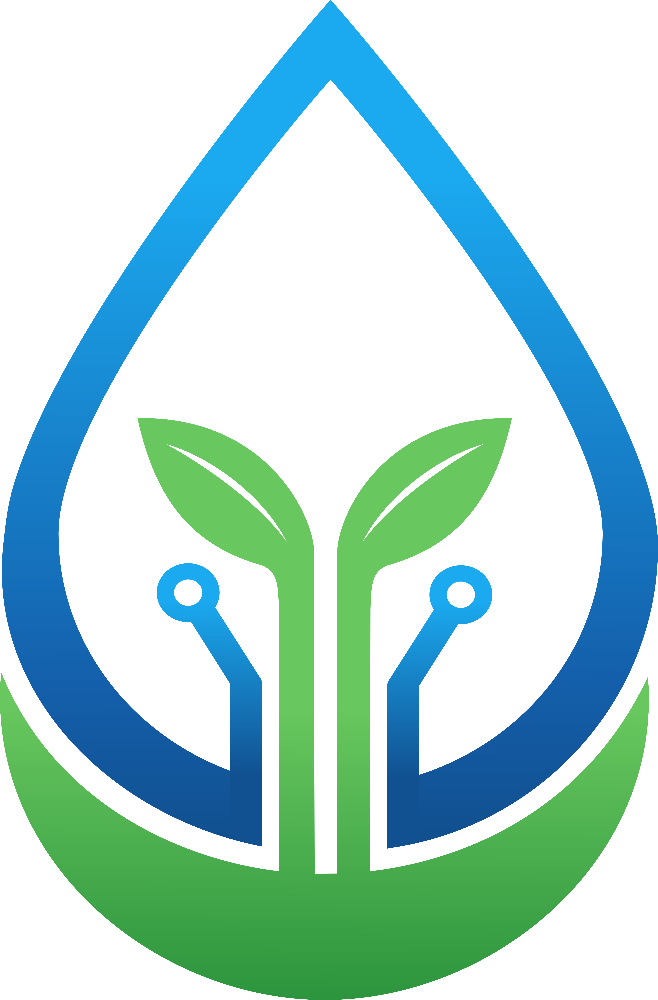
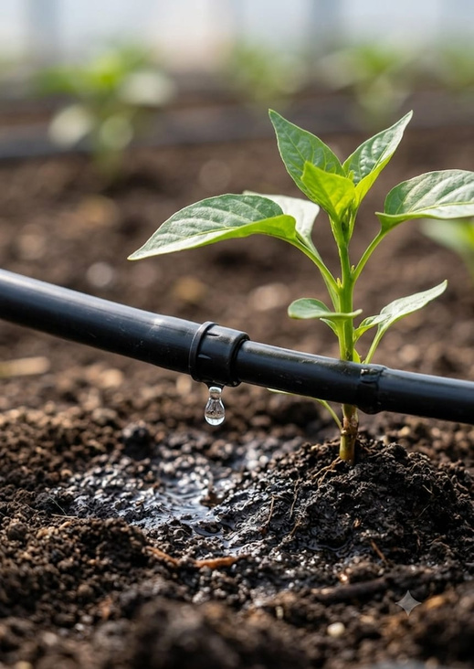

Lahan Blok A • Hortikultura Cabai
Kabupaten Gresik (-7.0396°S, 112.534°E) • TETES SmartFarm OS
Alat Online
Beban: 2.2 W
EBT: -- W
Baterai: --%
Aplikasi Web Siap Dipasang di Google Chrome
Dapat diunduh langsung menjadi aplikasi native mandiri di Android / Desktop tanpa Play Store.
ESP32 NODE 01: ONLINE & AKTIF
SEDANG NYALA
Perangkat fisik terhubung ke Hotspot • Telemetri IoT dikirim tiap 5 detik ke Firebase.
WAKTU OPERASIONAL
00:00:00
Durasi Nyala
BEBAN LISTRIK
2.2 W
Daya ESP32 Standby
HEARTBEAT
Baru saja
Ping Aktif
Inovasi TETES
Smart Micro-Irrigation
Kabupaten Gresik 2026
TETES
Inovasi untuk Pertanian Cerdas dan Hemat Air
Solusi penyiraman presisi yang memanfaatkan data kondisi tanah, prediksi kelembapan berbasis AI Deep Learning LSTM, dan ramalan cuaca satelit Open-Meteo untuk efisiensi air ekstrem pada tanaman cabai.
IoT Monitoring Lahan
+
AI Prediktif LSTM
+
Info Cuaca Satelit
=
TETES Irigasi Adaptif

Uji Lahan Cabai
Hasil Pengujian Real-Time
--%
Efisiensi Pengurangan Air (AI Presisi)
Konvensional
-- mL
TETES Presisi
-- mL
Menghitung Telemetri Riil...
AUTO AI
Monitoring Standby (Zona Perakaran Optimal)
Sensor tanah dan AI LSTM memantau tingkat kelembapan tanah tanaman cabai.
Streaming Data Alat Real-Time
Cara Kerja TETES
Alur Kerja Otomasi Cerdas dari Sensor Lahan hingga Keputusan Presisi
Closed-Loop IoT & AI
1
Data Kondisi Tanah
Sensor membaca kelembapan tanah (Capacitive), suhu perakaran (DS18B20), & udara (DHT22).
2
Prediksi AI
Model LSTM memprediksi tren perubahan kelembapan tanah 15-60 menit ke depan.
3
Informasi Cuaca
Sistem membaca prakiraan radar hujan satelit Open-Meteo Gresik sebagai pertimbangan.
4
Keputusan Penyiraman
Algoritma mengevaluasi ambang cabai (40-50%) dan menunda siram jika akan turun hujan.
5
Penyiraman Otomatis
ESP32 mengaktifkan Relay Pompa 12V & Solenoid Valve menyalurkan air terukur zona akar.
6
Monitoring
Kondisi lahan, grafik telemetri, prediksi AI, dan baterai EBT dipantau via web app real-time.
Kelembapan Tanah Aktual
--
%
Target: 40.0% - 50.0%
Zona Aman
Daya Pembangkit EBT Surya
--
W
Modul: 100 Wp Mono
Zero Grid
Kapasitas Baterai (SoC)
--
%
LiFePO4 12V 30Ah
Otonom 3 Hari
Indeks Transpirasi (VPD)
--
kPa
Ideal: 0.8 - 1.2 kPa
Fotosintesis Puncak
Telemetri Sensor Lapangan Real-time
ESP32 Sampling: 3s
Suhu Udara
-- °C
DHT22 (GPIO 23)
Kelembapan Udara
-- %
DHT22 (GPIO 23)
Suhu Perakaran
-- °C
DS18B20 (GPIO 4)
Titik Embun
-- °C
Magnus Formula
Prediksi LSTM +15m
-- %
soil_lstm_smooth
Prakiraan Hujan
-- %
Open-Meteo Radar
Analisis Deret Waktu & AI LSTM
Window: 72 Seq (15m Interval)
AI Model: LSTM 2-Layer with Dropout (386 KB)
Fitur: Soil Moisture, Soil Temp, Air Temp, Humidity, Dew Point
Pembangkit Tenaga Surya & BESS
EBT Mandiri
Daya Panel PV:
-- W
Beban Daya Sistem:
2.2 W
Neraca Daya (Net):
-2.2 W
Tegangan Bus:
12.6 V
Arus Pengisian:
0.00 A
Radiasi Surya:
0 W/m²
Baterai LiFePO4 12V
88%
Reduksi Karbon: 0.36 kg CO₂
Advis Energi Cerdas: Pasokan Energi Mandiri Stabil. Sistem berjalan dalam mode efisiensi EBT.
Kendali Aktuator & Katup
Relay 2-Ch (Active Logic)
Pompa Mini 12V
OFF
GPIO 25 (Relay 1)
Solenoid 12V
CLOSE
GPIO 27 (Relay 2)
Waktu Nyala Pompa:
--:--:--
Waktu Mati Pompa:
--:--:--
Durasi Siram:
0 detik
Daya Pompa:
0.0 W
Dampak dan Potensi
Kontribusi Nyata Inovasi TETES untuk Pertanian Presisi Berkelanjutan
Inovasi Gresik 2026
Sosial
Adopsi teknologi modern yang ramah petani lokal, mengurangi kerja fisik manual, dan pemantauan lahan lebih mudah dari mana saja.
Ekonomi
Efisiensi biaya operasional air dan listrik melalui tenaga surya mandiri. Estimasi pengembalian modal (ROI) di bawah 8 bulan.
Lingkungan
Penghematan air sebesar 87,11%, pencegahan erosi tanah akibat over-watering, serta nol emisi karbon (Zero Grid Emission).
Budaya
Mendorong transformasi budaya pertanian konvensional berbasis intuisi menjadi pertanian presisi berbasis data dan inovasi AI.
Arsitektur Pembangkit EBT Surya & Dekarbonisasi
100% Off-Grid Zero Emission
Daya PV Aktual
0.0 W
Kapasitas: 100 Wp Monocrystalline
Kapasitas Baterai (SoC)
88%
LiFePO4 12V 30Ah (360 Wh)
Produksi Bersih Hari Ini
0.42 kWh
Kemandirian Energi 100% Off-Grid
Reduksi Emisi CO₂
0.36 kg
Faktor: 0.85 kg CO₂ / kWh
Beban Sistem Aktif
2.2 W
ESP32 Standby
Keseimbangan Daya Bersih
-2.2 W
Baterai Discharging
Konsumsi Energi Listrik
0.00 Wh
Integrasi Realtime per Detik
Status Operasional IoT
ONLINE
Uptime: 00:00:00
Kalkulator Ilmiah Agronomi (FAO-56) & ROI
Penman-Monteith Standard
Evapotranspirasi ET₀
4.62 mm/h
Hargreaves-Samani Formula
Kebutuhan Air Tanaman
0.48 L/tan/h
Presisi Zona Akar Cabai
Air Dihemat
34.650 Liter
vs Siram Konvensional (1.25 L)
Tingkat Efisiensi
61.6%
Penghematan Air Ekstrem
Payback Period (BEP)
1.2 Tahun
+28.5% Hasil Panen Cabai
Riwayat Log Telemetri Sensor Lapangan
| Waktu (WIB) | Kelembapan Tanah (%) | Suhu Tanah (°C) | Suhu Udara (°C) | Kelembapan Udara (%) | VPD (kPa) | Daya EBT (W) | Status Pompa |
|---|---|---|---|---|---|---|---|
| Menghubungkan ke Firebase & Mengambil Data Riil Sensor... | |||||||
Asisten Pakar Agronomi & Energi Surya
Decision Support Engine
Halo! Saya AI Agronomist TETES. Saya siap menganalisis data telemetri tanaman cabai Anda, membedah perhitungan efisiensi air 60%, serta menjelaskan cara kerja model AI LSTM dan sistem pembangkit listrik tenaga surya EBT mandiri. Ada yang ingin Anda tanyakan?
Pemetaan Pinout & Kalibrasi Sensor
ESP32 DevKit V1 Hardware Mapping
DHT22 (Udara)
GPIO 23
Digital Temp & Humidity
DS18B20 (Tanah)
GPIO 4
OneWire Waterproof Probe
Soil Moisture
GPIO 34
ADC 12-Bit Analog Input
Pompa 12V DC
GPIO 25
Relay 1 (Active HIGH)
Solenoid 12V
GPIO 27
Relay 2 (Active LOW)
Kalibrasi Nilai RAW Analog Sensor Tanah
Rumus Kalibrasi: % = ((RAW_DRY - RAW) / (RAW_DRY - RAW_WET)) * 100%
RAW_DRY (Udara Kering): 2071 (0% Lembab)
RAW_WET (Air Jenuh): 742 (100% Lembab)